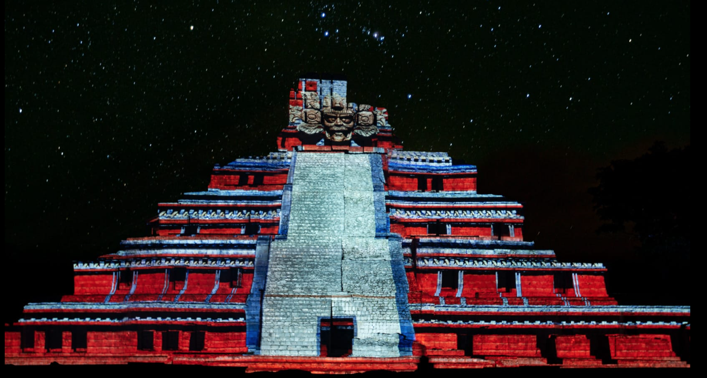

Selected work · Generative art · 3D motion
Particle System Art
Ethereal Motion — a visual journey through abstract dimensions where geometry becomes emotion and motion transforms into poetry. Bioluminescent fluid dynamics rendered as generative art.

Overview
When motion becomes poetry.
A generative motion piece in Blender and TouchDesigner — thousands of points of light simulated as bioluminescent fluid, falling, folding and blooming in the dark.
Studies
More motion from the series.
Need motion that feels alive?
We design generative systems and 3D motion for exhibitions, brands and immersive spaces.
Start a project →